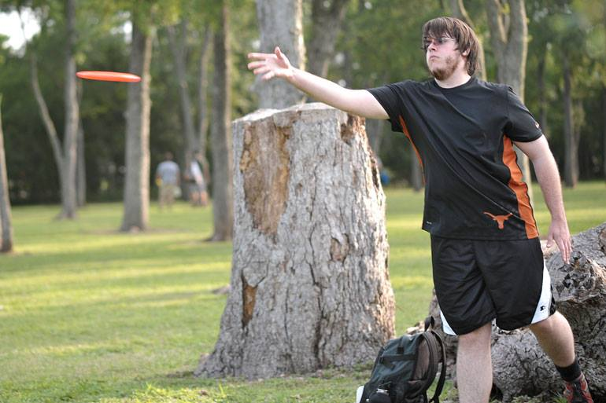

About Me
My name is Paul "Pez" Nesbitt and I've been an avid disc golfer for about 10+ years. My dad, David "Nez" Nesbitt, has played all kinds of disc sports for longer then I've been alive, and got me started around the age of 12 or so, and I haven't really stopped since. With him being the previous Board of Directors President for the Professional Disc Golf Association (PDGA), still helping out a lot in the disc golf community, and continuing to be an avid player himself, the sport plays a pretty large part in my life. I've gotten to know a lot of the community, including many of the big name pros in the sport, who have even stayed at our house whenever there are big tournaments in town. I've gotten to travel a number of times to play in tournaments, including the Amateur World Championships, and have gotten to see many different parts of the country just playing at different courses around the US. I enjoy playing this sport immensely, while getting the chance to meet new people, and don't see myself stopping any time soon.
About Disc Golf (from the PDGA webpage)
What is Disc Golf?
Disc golf is played much like traditional golf. Instead of a ball and clubs, however, players use a flying disc, or Frisbee®. The sport was formalized in the 1970's, and shares with "ball golf" the object of completing each hole in the fewest strokes (or, in the case of disc golf, fewest throws). A golf disc is thrown from a tee area to a target which is the "hole". The hole can be one of a number of disc golf targets; the most common is called a Pole Hole® an elevated metal basket. As a player progresses down the fairway, he or she must make each consecutive throw from the spot where the previous throw has landed. The trees, shrubs, and terrain changes located in and around the fairways provide challenging obstacles for the golfer. Finally, the "putt" lands in the basket and the hole is completed. Disc golf shares the same joys and frustrations of traditional golf, whether it's sinking a long putt or hitting a tree halfway down the fairway. There are few differences, though. Disc golf rarely requires a greens fee, you probably won't need to rent a cart, and you never get stuck with a bad "tee time." It is designed to be enjoyed by people of all ages, male and female, regardless of economic status.
Who Plays Disc Golf?
Disc golf can be played from school age to old age, making it one of the greatest lifetime fitness sports available. Specially-abled and disabled participate, giving them the opportunity to take part in a mainstream activity. Because disc golf is so easy to learn, no one is excluded. Players merely match their pace to their capabilities, and proceed from there. The Professional Disc Golf Association, with a member base of 50,000+, is the governing body for the sport and sanctions competitive events for men and women of every skill level from novice to professional. Permanent disc golf courses are found in countries worldwide.
Where do I play?
Many city parks have golf courses already set up. Most are free to play as often as you like. Disc golfers who do not have the benefit of a permanent disc golf facility in their area often "make up" courses in nearby parks and green spaces.
One of the great features disc golf shares with traditional golf is that they are both played in beautiful settings. A nine-hole disc golf course can be established on as little as five acres of land, and a championship-caliber 18-hole course on 30 to 40 acres. Disc golf courses can coexist with existing park facilities and activity areas. The ideal location combines wooded and open terrains, and a variety of topographical change.
The need for more courses is constant, as the sport continues to grow in popularity. The PDGA has created resources for the design and installation of new golf courses, to ensure their success in the community.
The PDGA also publishes and sells an annual course directory, and manages and maintains a free online directory of disc golf courses at http://www.pdga.com/course-directory.
Why should I play?
The ongoing fitness boom finds more and more people taking up recreational activities in an effort to improve health and quality of life. Disc golf provides upper and lower body conditioning, aerobic exercise, and promotes a combination of physical and mental abilities that allow very little risk of physical injury. Concentration skills increase by mastering shots and negotiating obstacles. Players of limited fitness levels can start slowly and gradually increase their level of play as fitness improves. Scheduling is also flexible; a round takes one to two hours, and may be played alone, eliminating the difficulty of scheduling tee times. And as in traditional golf, disc golfers find themselves "hooked;" increasing the likelihood of frequent participation. Disc golf offers year-round fitness, even in rain or snow. Perhaps the greatest attribute of the sport is the expense - or rather, the lack of it. A professional quality disc costs less than $15, and it only takes one for basic play.
And, of course, there's the sheer fun of the game - no matter what your age or skill level!
Play disc golf...it's in the air!!!
Disc Golf from Joe Canali on Vimeo.